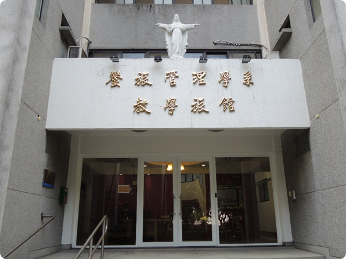

關於教學旅館
聖心學苑是餐旅管理學系的實作場域。學生在這裡練習訂房、接待與房務，將課堂所學帶進每一次服務。
16
間客房
5
種房型
NOTICE BOARD
旅館佈告欄
- 接待對象
- 受各系所邀請的貴賓、校友，以及參與輔大活動的來客。
- 預約方式
- 採事先預約，原則上請於住宿前三日辦妥；實際訂房請洽系上。
- 入住 / 退房
- 15:30 入住 · 12:00 退房；提供短期住宿。
- 住宿提醒
- 不提供餐食，館內不可開伙；晚間 22:00 起有門禁，晚歸請先告知。

聖心學苑是餐旅管理學系的實作場域。學生在這裡練習訂房、接待與房務，將課堂所學帶進每一次服務。
NOTICE BOARD